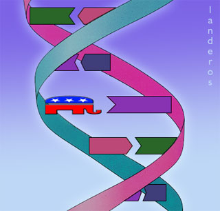

|

Republicanism shown to be genetic
Science finally proves that being GOP is not a chosen lifestyle.
- - - - - - - - - -
by Log Cabin
 CIENTISTS IN THE CURREN ISSUE of the journal NURTURE announced the discovery that affiliation with the Republican Party is genetically determined. This caused uproar among traditionalists who believe it is a chosen lifestyle. Reports of the gene coding for political conservatism, discovered after a decades-long study of quintuplets in
Orange County
,
CA
, has sent shock waves through the medical, political, and golfing communities. CIENTISTS IN THE CURREN ISSUE of the journal NURTURE announced the discovery that affiliation with the Republican Party is genetically determined. This caused uproar among traditionalists who believe it is a chosen lifestyle. Reports of the gene coding for political conservatism, discovered after a decades-long study of quintuplets in
Orange County
,
CA
, has sent shock waves through the medical, political, and golfing communities.
Psychologists and psychoanalysts have long believed that Republicans' unnatural disregard for the poor and frequently unconstitutional tendencies resulted from dysfunctional family dynamics -- a remarkably high percentage of Republicans do have authoritarian domineering fathers and emotionally distant mothers who didn't teach them how to be kind and gentle. Biologists have long suspected that conservatism is inherited. "After all," said one author of the NURTURE article, "It's quite common for a Republican to have a brother or sister who is a Republican." The finding has been greeted with relief by Parents and Friends of Republicans (PFREP), who sometimes blame themselves for the political views of otherwise lovable children, family, and unindicted co-conspirators.
One mother, a longtime Democrat, wept and clapped her hands in ecstasy on hearing of the findings. "I just knew it was genetic," she said, seated with her two sons, both avowed Republicans. "My boys would never freely choose that lifestyle!" When asked what the Republican lifestyle was, she said, "You can just tell watching their conventions in
Houston
and
San Diego
on TV: the flaming xenophobia, flamboyant demagogy, disdain for anyone not rich, you know." Both sons had suspected their Republicanism from an early age but did not confirm it until they were in college, when they became convinced it wasn't just a phase they were going through.
The NURTURE article offered no response to the suggestion that the high incidence of Republicanism among siblings could result from their sharing not only genes but also psychological and emotional attitude as products of the same parents and family dynamics.
A remaining mystery is why many Democrats admit to having voted Republican at least once -- or often dream or fantasize about doing so. Polls show that three out of five adult Democrats have had a Republican experience, although most outgrow teenage experimentation with Republicanism.
Some Republicans hail the findings as a step toward eliminating conservophobia. They argue that since Republicans didn't "choose" their lifestyle any more than someone "chooses" to have a ski-jump nose, they shouldn't be denied civil rights, which other minorities enjoy.
If conservatism is not the result of stinginess or orneriness (typical stereotypes attributed to Republicans) but is something Republicans can't help, there's no reason why society shouldn't tolerate Republicans in the military or even high elected office -- provided they don't flaunt their political beliefs.
For many Americans, the discovery opens a window on a different future. In a few years, gene therapy might eradicate Republicanism altogether.
But should they be allowed to marry?

|